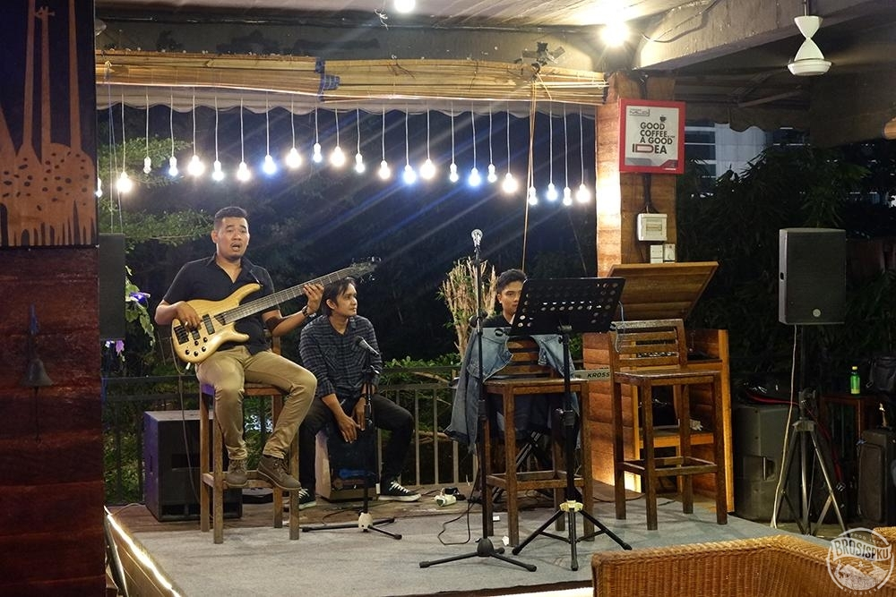

Selamat datang di Cafe 'Santai Senja' Kami adalah kafe yang berlokasi di Jl. Sudirman, No. 11 Kota Makassar dan menawarkan suasana yang nyaman, hangat, dan ramah untuk menikmati makanan lezat dan minuman yang menyegarkan. Di Cafe 'Santai Senja', kami bangga menyajikan berbagai pilihan menu yang terbuat dari bahan-bahan berkualitas tinggi dan segar. Mulai dari kopi khas kami yang diseduh dengan biji kopi pilihan, hingga makanan ringan dan makanan berat yang lezat, seperti sandwich, pasta, dan salad. Kami juga menawarkan pilihan pencuci mulut yang menggoda, seperti kue-kue lembut dan roti manis yang dibuat setiap hari oleh tim pastry kami yang berbakat. Cafe 'Santai Senja' tidak hanya menyediakan makanan dan minuman yang lezat, tetapi juga tempat yang sempurna untuk bersantai, bekerja, atau berkumpul dengan teman. Interior kami dirancang dengan gaya yang unik dan menarik, menciptakan suasana yang santai dan inspiratif. Kami juga menawarkan fasilitas seperti Wi-Fi gratis dan colokan listrik yang memudahkan Anda untuk tetap terhubung dan produktif. Cafe "Santai Senja" adalah tempat yang sempurna untuk melarikan diri dari hiruk-pikuk kehidupan sehari-hari. Terletak di jantung kota, cafe ini adalah oase kecil yang menawarkan pengalaman santai yang tak terlupakan bagi semua pengunjungnya.
Dengan dekorasi yang hangat dan modern, "Santai Senja" menghadirkan suasana yang penuh dengan pesona. Setiap sisi dinding cafe dihiasi dengan tanaman-tanaman hijau, dan lampu gantung yang lembut menciptakan cahaya yang menyenangkan sepanjang hari. Meja-meja kayu yang nyaman dan kursi berlapis empuk membuat pengunjung merasa seperti di rumah sendiri.
Menu cafe ini juga merupakan daya tarik utama. Mereka menyajikan berbagai macam kopi dari biji kopi berkualitas tinggi, dari espresso yang kuat hingga cappuccino yang lembut. Selain itu, Anda juga dapat menemukan berbagai jenis teh herbal yang segar dan minuman ringan seperti smoothie buah-buahan segar. Bagi pecinta makanan, "Santai Senja" memiliki pilihan makanan ringan seperti sandwich gourmet, salad segar, dan kue-kue lezat yang disajikan setiap hari.
Cafe ini juga memiliki area duduk outdoor yang luas, dengan taman yang indah dan pohon-pohon yang memberikan teduh. Ini adalah tempat yang sempurna untuk menikmati cuaca yang baik sambil menikmati minuman favorit Anda.

Selain itu, cafe ini sering menjadi tuan rumah untuk berbagai acara seni dan musik lokal. Mereka mengundang seniman dan musisi lokal untuk tampil di panggung kecil mereka, menciptakan suasana yang hidup dan penuh energi. Kami bangga mendukung komunitas musik lokal dengan mengadakan pertunjukan live music secara rutin. Jangan lewatkan kesempatan untuk menikmati penampilan musisi berbakat sambil menikmati hidangan favorit Anda di Cafe 'Santai Senja'. Ikuti kami di media sosial dan daftarkan diri Anda ke newsletter kami untuk mendapatkan informasi terbaru tentang jadwal pertunjukan dan promo menarik.
"Santai Senja" adalah tempat yang cocok untuk bersantai, bekerja, atau berkumpul dengan teman-teman. Dengan suasana yang ramah dan pilihan minuman dan makanan yang lezat, cafe ini telah menjadi favorit di kalangan penduduk setempat dan pengunjung dari luar kota. Jadi, jika Anda mencari tempat yang sempurna untuk menghabiskan waktu santai, kunjungi Cafe "Santai Senja" dan nikmati pengalaman yang tak terlupakan. Kami sangat menantikan kedatangan Anda di Cafe 'Santai Senja'. Datang dan rasakan sendiri kenikmatan dan suasana yang kami tawarkan. Sampai jumpa di sini!
Hak Cipta © Projek